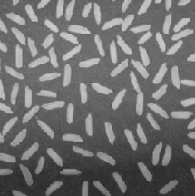

影响分析（上）
Read and Show An Image
- imread()
- imshow()
1 | clear, close all |
immultiply()
1 | I = imread('rice.png'); |
imadd()
1 | I = imread('rice.png'); |
两张图片相加会变亮，相加的条件是大小要相等
imhist()
1 | imhist(I) |
将每一个graylevel拿出来统计，得到一个统计图表，横坐标为0~255，纵坐标为frequency
histeq()
1 | I = imread('pout.tif'); I2 = histeq(I); |
对比度增加
imrotate()
1 | I = imread('rice.png'); |
imwrite()
1 | imwrite(I, 'pout2.png'); |
影像分析（下）
Problem Setup
对于下图，如何通过影像分析数到有多少颗米，米的大小有多大？

策略：
- 将该图二值化，即米变成白色，背景变成黑色
- 计算连在一起的白色的点数
Image Thresholding
1 | I = imread('rice.png'); imhist(I); |
A gray-level image can be turned into a binary image by using a threshold
通过观察直方图，选出一个值(threshold)，对于每个像素，大于那个值的设置为白色，小于的设置为黑色
graythresh() and im2bw()
- graythresh() find an optimal threshold level
- im2bw() converts an images into binary image
1 | I = imread('rice.png'); |
由于部分亮的背景被误认为米粒而变白，所以二进制图里面会有一些闪光点，为了不让这些点影响计算米粒数量结果，需要想办法让背景更加纯洁，就需要割去原有的背景
Background Estimation
- Estimation for the gray level of the background
1 | I = imread('rice.png'); |
BG就是该图的背景，要去掉背景，就将原图减去这个背景图
Background Subtraction
1 | I = imread('rice.png'); |
这样就能让背近更加纯净
Thresholding on Background Removed Image
1 | I = imread('rice.png'); level = graythresh(I); |
可以见到由I2生成的bw2中没有了之前的闪点（sparkle）
这样让误差减少了很多
identify how many grains are there in the image
使用的算法：Connected-component Labeling
A procedure for assigning a unique label to each object
对于原来的binary image，每个像素要么1要么0；
对于每个区域的1，用不同的label来标记，1、2、3.。。
1 | 0 0 0 0 0 0 0 |
变成
1 | 0 0 0 0 0 0 0 |
Connected-component Labeling: bwlabel()
1 | I = imread('rice.png'); |
labeled就是一个用不同lebal标记后的一个矩阵
看最大的label是多少就是米的数量有多少
- What is the size of the largest grain?
- what is the mean size of the grains?
Color-coding Objects: label2rgb()
- Converts a label matrix into an RGB color image
- Visualize the labeled regions
1 | I = imread('rice.png'); |
label2rgb()就是添加不同颜色，无其他功能
Object Properties: regionprops()
- Provedes a set of properties for each connected component
可以知道米的大小
1 | I = imread('rice.png'); |